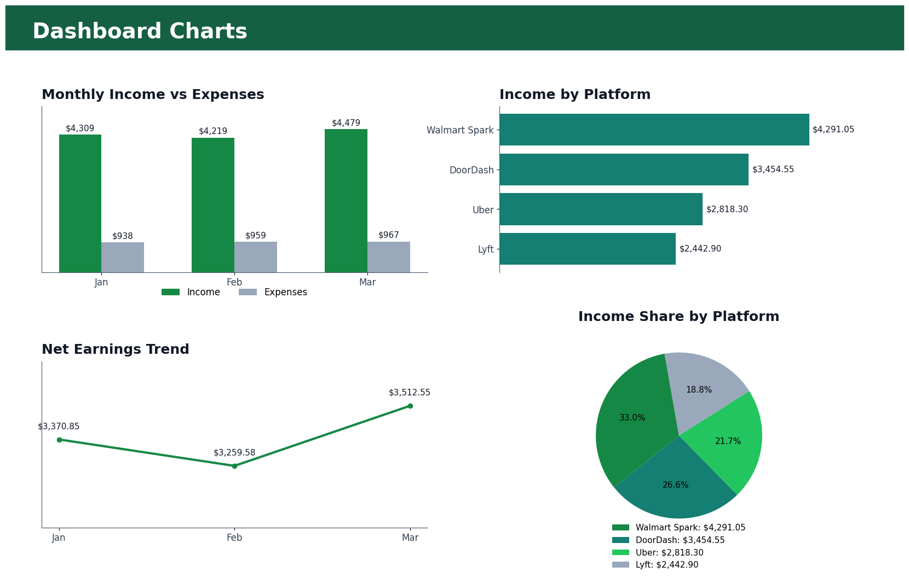

Purpose
This dashboard shows whether the delivery business is making money, where income comes from, where expenses go, and which decisions can improve profit.
It gives a quick monthly view for bookkeeping review, budgeting, tax preparation, and platform performance analysis.
Monthly Business Performance Dashboard
| Dashboard Metric | Value | Why It Matters |
|---|---|---|
| Total Income | $13,006.80 | Shows all money earned from delivery platforms. |
| Total Expenses | $2,863.77 | Shows business costs such as gas, phone, maintenance, tolls, parking, and supplies. |
| Net Earnings | $10,143.03 | Shows real earnings after expenses. |
| Profit Margin % | 78% | Shows how profitable the work is after costs. |
| Total Business Miles | 7,245 | Supports mileage tracking and tax preparation. |
| Income by Platform | Walmart Spark, DoorDash, Uber, Lyft | Shows which platforms generate income. |
| Expenses by Category | Gas, insurance, phone, maintenance, tolls, parking, supplies | Shows where money is going. |
| Monthly Income vs Expenses | January to March comparison | Shows the business trend month by month. |
| Net Profit by Month | March was strongest | Shows whether profit is improving. |
| Cost per Mile | $0.40 | Shows driving efficiency. |
| Best Income Platform | Walmart Spark | Helps decide where to work more. |
| Highest Expense Category | Gas | Helps identify where costs can be reduced. |
Best Charts to Include
| Chart | Purpose |
|---|---|
| Column Chart: Monthly Income vs Expenses | Compare money earned versus money spent. |
| Line Chart: Net Profit Trend | See if earnings improve monthly. |
| Pie Chart: Income by Platform | See which platform brings the most income. |
| Bar Chart: Expenses by Category | See the biggest costs. |
| KPI Cards | Show total income, expenses, profit, and miles quickly. |


Business Analysis
The dashboard shows $13,006.80 in total income, $2,863.77 in total expenses, and $10,143.03 in net earnings for the 3-month period. Walmart Spark is the strongest income platform with $4,291.05.
The business decision is to prioritize Walmart Spark and DoorDash, monitor gas and vehicle-related expenses, and review monthly profit trends before deciding which platforms deserve more working time.
Result
This dashboard gives a professional summary of delivery driver bookkeeping activity and supports better decisions using real numbers instead of guessing.